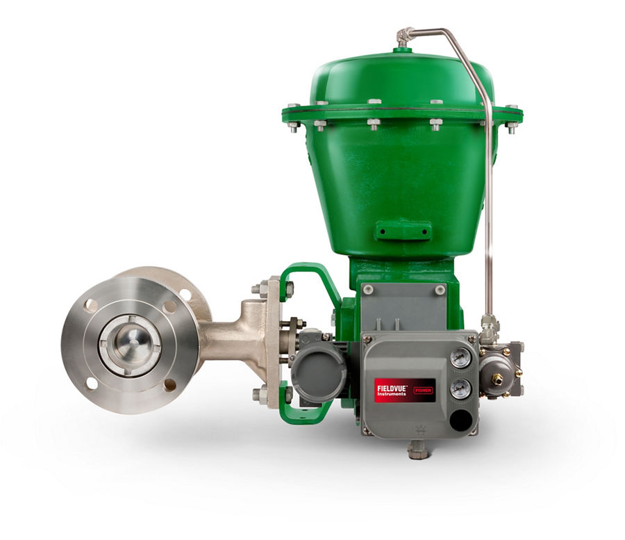
Fisher CV500 Eccentric Plug Valve
Van xoay 'rotary globe' bi chữ V + seat tự định tâm; NPS 3–12, CL150–600; bản CAVHEX chống xâm thực.
Van bi phân đoạn Vee-Ball V150/V300, van nút lệch tâm V500/CV500 và các van xoay Fisher cho lưu chất bẩn, sợi, bùn và dải điều tiết rộng.
Fast Group cung cấp van bi & van xoay điều khiển Fisher chính hãng, đủ CO/CQ. Mỗi model có trang riêng với mô tả, biến thể, tài liệu kỹ thuật và hướng dẫn gửi RFQ.

Van xoay 'rotary globe' bi chữ V + seat tự định tâm; NPS 3–12, CL150–600; bản CAVHEX chống xâm thực.
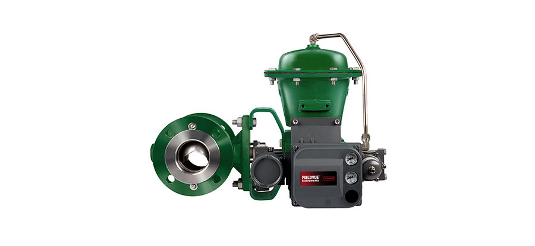
Van bi chữ V (segmented ball) CL150; đặc tính equal % cải tiến; NACE; bản slurry V150S.
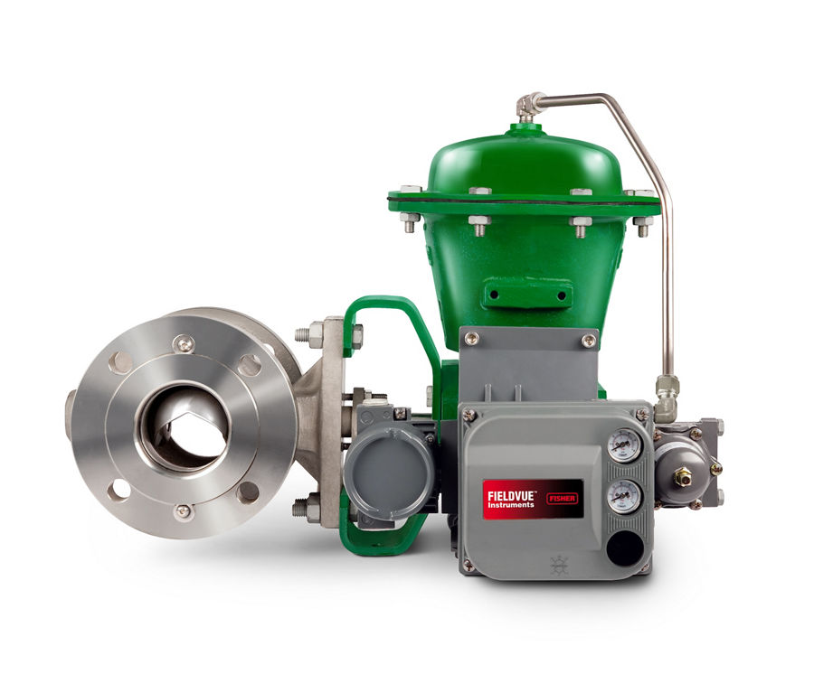
Van bi chữ V CL300, seal HD/kim loại/PEEK; nhiệt độ tới 427 °C; bản V300 CAV HEX chống xâm thực.

Van xoay nút lệch tâm cho lưu chất mài mòn, cốc hóa; NPS 1–12; kín Class IV hai chiều; trim chống mài mòn.
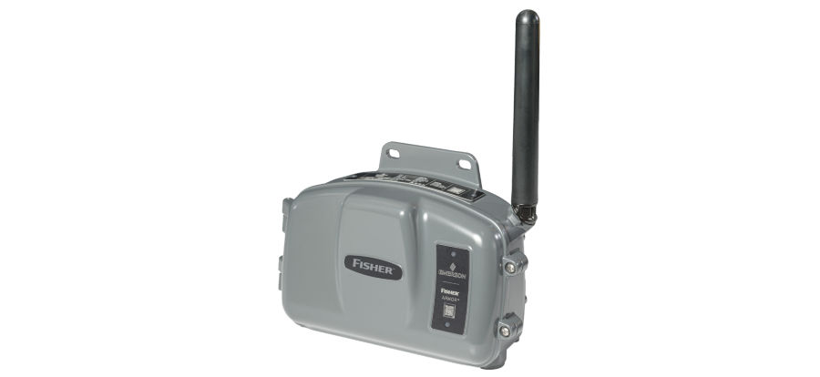
Van bi điều khiển Fisher ARMOR. The Fisher ARMOR is a remote monitoring device that is configurable to serve as a regulator monitoring…
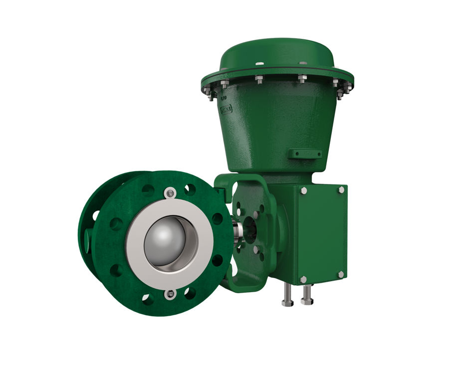
Van bi điều khiển Fisher SS-138B. The Fisher SS-138B is specifically designed for Continuous Catalytic Regeneration application. Learn more…
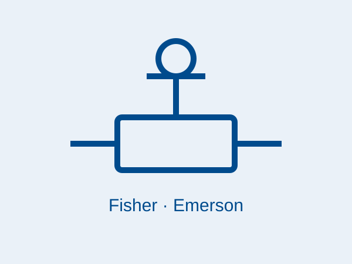
Van bi điều khiển Fisher SS-260.
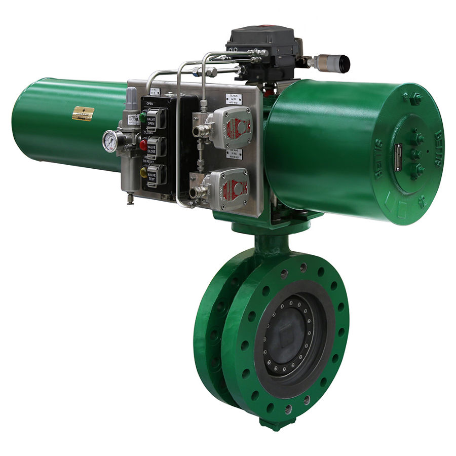
Van bi điều khiển Fisher TOV. The TOV solution supports critical SIS needs. The valve uses proven Fisher actuation, FIELDVUE control, and…

Van bi điều khiển Fisher V150 CAV HEX. The Fisher Vee-Ball V150 control valve is your best choice for performance and cost-effectiveness across a…
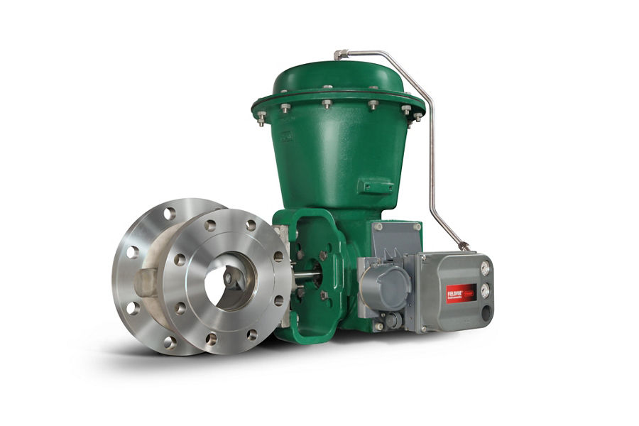
Van bi điều khiển Fisher V150E. This valve body design accommodates requirements when expanded downstream piping is specified.
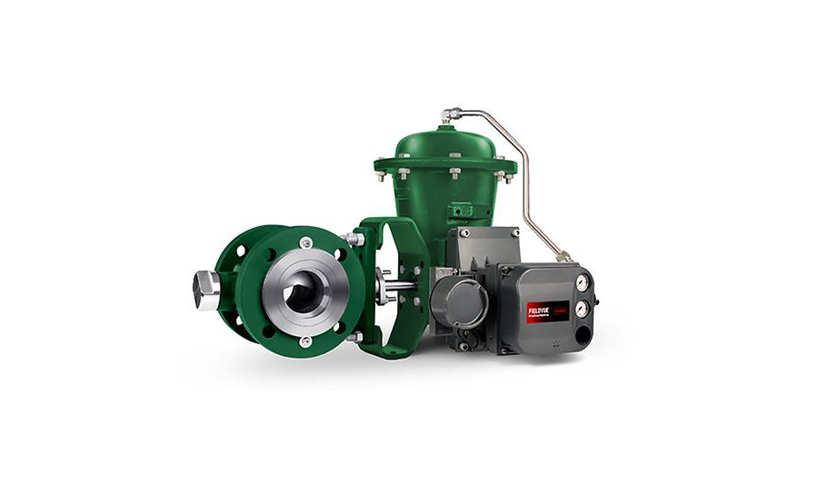
Van bi điều khiển Fisher V150S. The rugged construction, highly wear-resistant trim materials, and an unrestricted straight through flow…

Van bi điều khiển Fisher V200. Designed to provide dependable on/off or throttling operation for many different applications in the process…
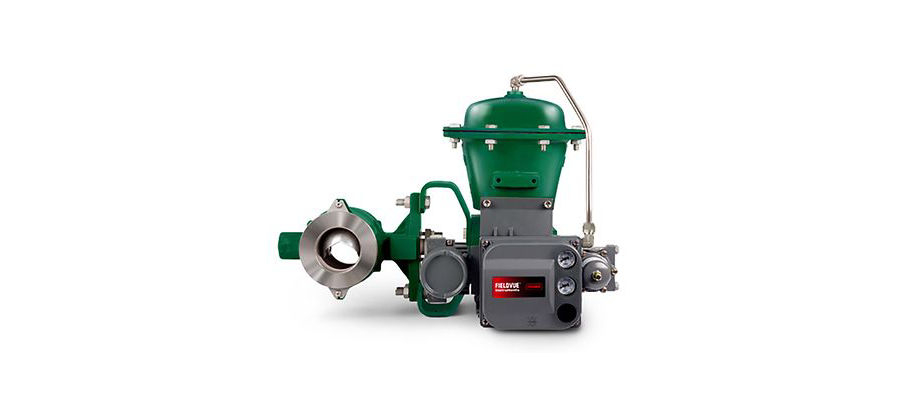
Van bi điều khiển Fisher V200 CAV HEX. The Fisher Vee-Ball V200 control valve is your best choice for performance and cost-effectiveness across a…
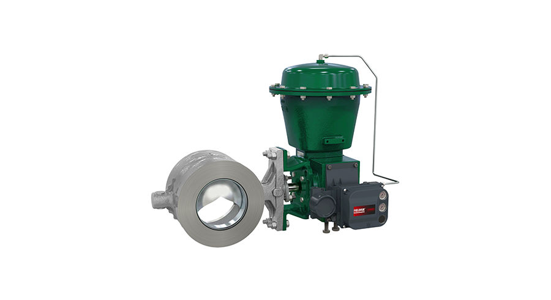
Van bi điều khiển Fisher V200U. The V200U is a flangeless design that offers many favorable traits of the proven V150, V200, and V300 Series…
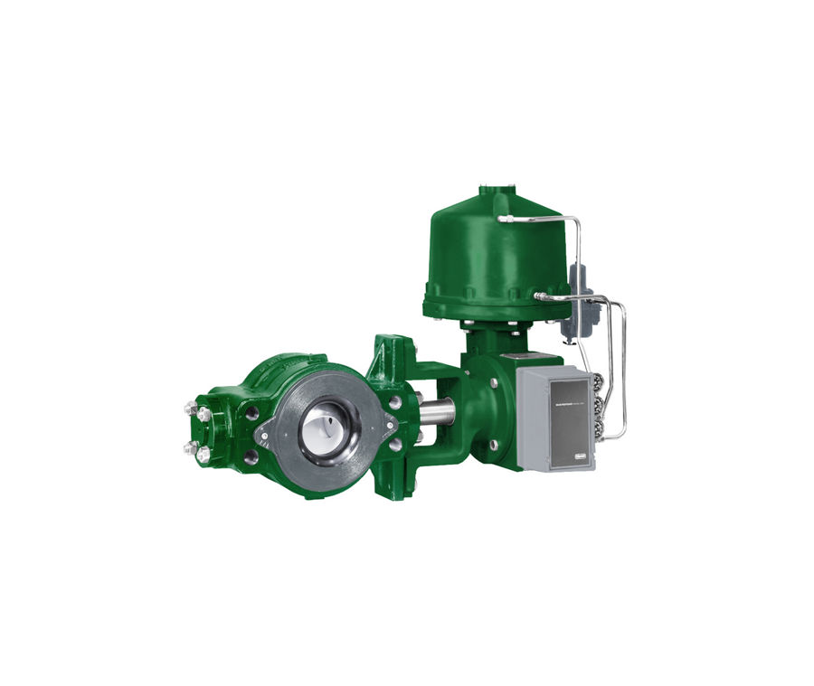
Van bi điều khiển Fisher V250. The Fisher V250 control valve is a heavy-duty, flangeless throttling ball valve often used to control flow…
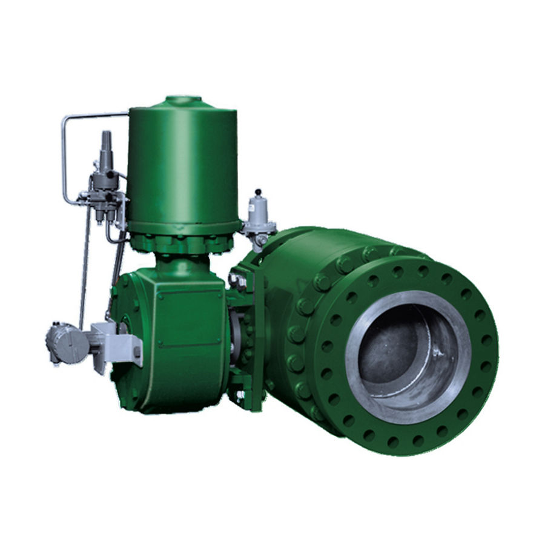
Van bi điều khiển Fisher V260. The Fisher V260 is a full bore control valve designed from the ground up with features for pressure, flow,…
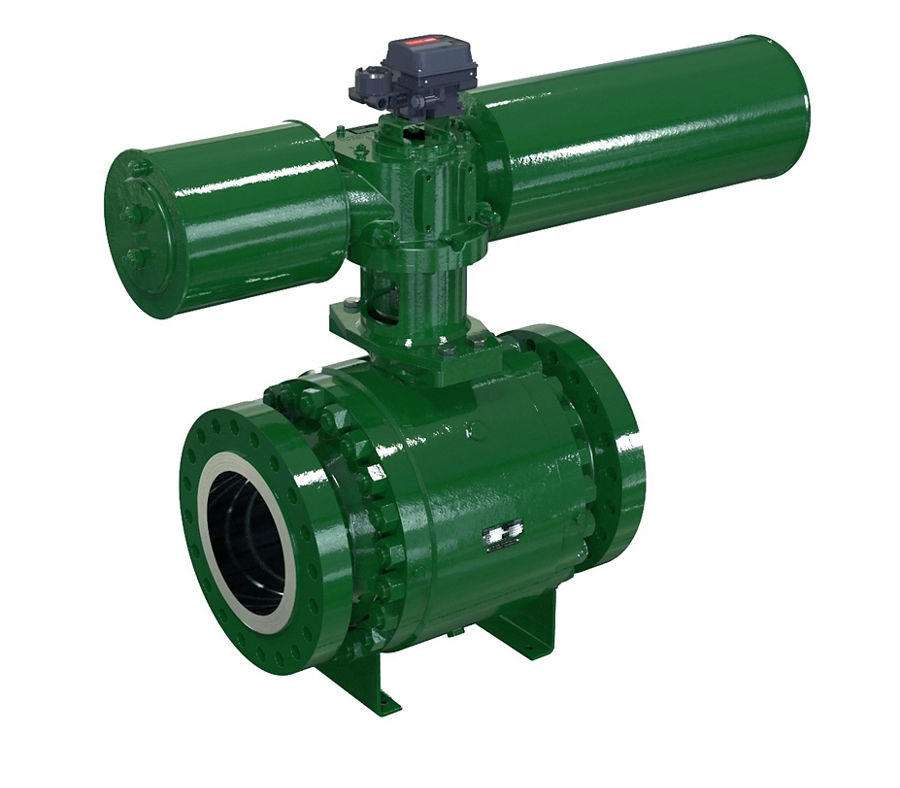
Van bi điều khiển Fisher V270. The Fisher V270 is a three piece, trunnion mounted, full-bore control valve designed from the ground up with…
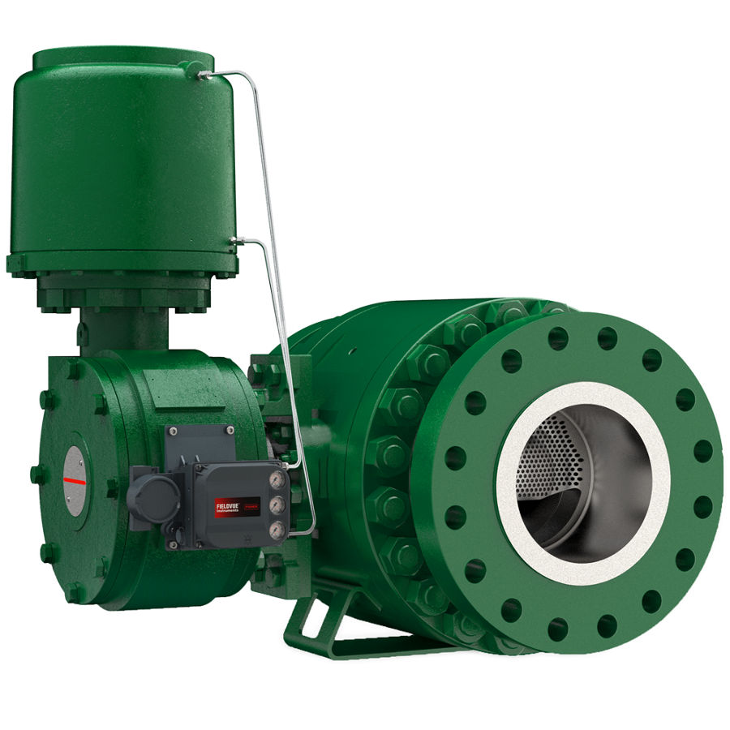
Van bi điều khiển Fisher V280. The Fisher™ V280 is a three-piece, trunnion mounted, full-bore control valve capable of handling full CL900…

Van bi điều khiển Fisher V300S. The rugged construction, highly wear-resistant trim materials, and an unrestricted straight through flow…
Trụ sở TP. Hồ Chí Minh và văn phòng Vũng Tàu đều tiếp nhận RFQ, tư vấn cấu hình và bàn giao bộ chứng từ CO/CQ; bảo hành chính hãng 12 tháng kể từ ngày giao hàng. Yêu cầu gửi trong giờ làm việc được phản hồi trong cùng ngày; giao hàng toàn quốc.
150/41 Nguyễn Cư Trinh, P. Cầu Ông Lãnh
51 Lê Văn Lộc, P. Vũng Tàu